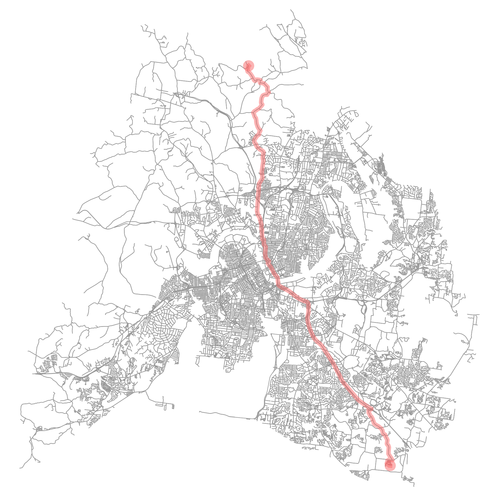

ROUTE POINTS
Source: (35.988773, -86.638339)
Destination: (36.356819, -86.781162)
Total Distance: 49094.8 meters
Route calculated in 1.446 seconds using Bellman-Ford

DIRECTIONS
Continue Northeast onto Longstalk Road for 49 meters
Turn right onto Longstalk Road
Travel Northwest for 401 meters along Longstalk Road
Turn left onto Prairie Hill Drive
Travel Northeast for 274 meters along Prairie Hill Drive
Turn right onto Notchleaf Road
Travel Southeast for 114 meters along Notchleaf Road
Turn left onto Clover Glen Way
Travel Northeast for 101 meters along Clover Glen Way
Turn right onto Old Hickory Boulevard
Travel Southeast for 363 meters along Old Hickory Boulevard
Turn right onto Cane Ridge Road
Travel Northwest for 5842 meters along Cane Ridge Road
Turn left onto Bell Road
Travel Southeast for 297 meters along Bell Road
Turn right onto Spring Street
Continue Northwest onto Spring Street for 18772 meters
Slight left onto Spring Street
Travel Northwest for 38 meters along Spring Street
Slight right onto Dickerson Pike
Travel Northwest for 1478 meters along Dickerson Pike
Slight right onto Whites Creek Pike
Travel Northwest for 798 meters along Whites Creek Pike
Slight left onto Fern Avenue
Travel Northwest for 144 meters along Fern Avenue
Slight right onto Brick Church Pike
Travel Northwest for 16341 meters along Brick Church Pike
Slight left onto Union Hill Road
Travel Northwest for 1476 meters along Union Hill Road
Turn left onto Lickton Pike
Travel Northeast for 162 meters along Lickton Pike
Turn right onto Union Hill Road
Travel Northwest for 992 meters along Union Hill Road
Slight right onto Greer Road
Travel Northwest for 1444 meters along Greer Road